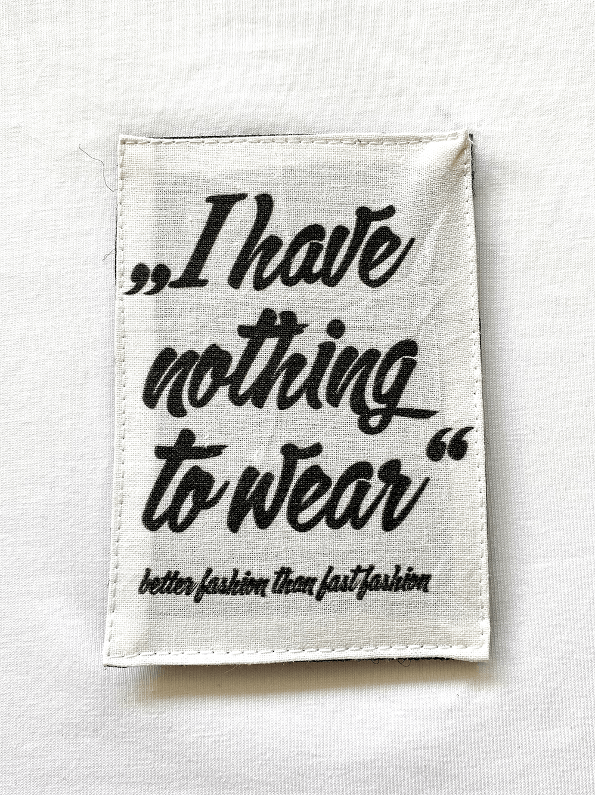

„Nothing to wear“
„Was ziehe ich heute nur an?“,“Das passt nirgends dazu!“ oder ähnliche Aussagen macht jeder von uns, obwohl wir vor einem prall gefüllten Kleiderschrank stehen.
Bio-Shirts
Nachhaltige, streng zertifizierte Bio-Baumwollshirts aus kontrollierter fairer Herstellung. Jedes Shirt kommt mit aufgenähtem Gegenstück für die Patches und einem Logo Backprint im Nacken.

„OVERSIZED T“
Schlichter oversized Schnitt mit Rundhals. Moderne Oversized Silhouette die vielseitig kombinierbar ist.

„Cropped T“
Lässig kurzes Oberteil im modisch kastenförmigen Schnitt. Mehr als nur Basic!